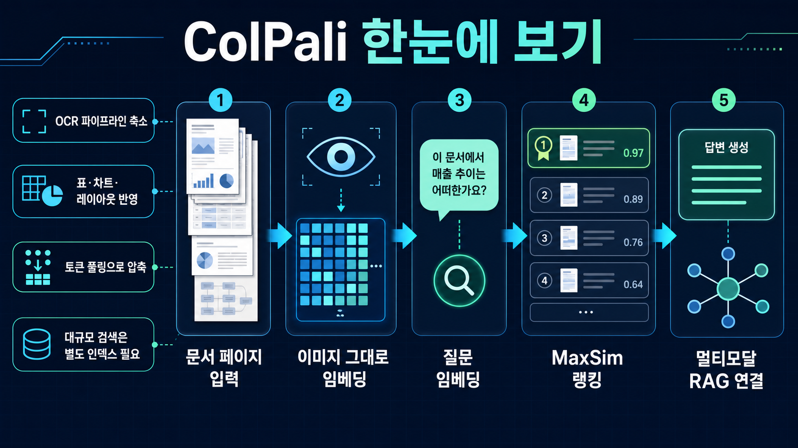

Slide 01
문제: PDF는 텍스트만으로 검색하기 어렵습니다
보고서, 논문, 매뉴얼에는 표, 그림, 도식, 위치 관계가 많습니다. OCR만 쓰면 글자는 뽑혀도 “어디에 있고 무엇과 연결되는지”가 흐려질 수 있습니다.
특히 차트·표·스캔본·다단 레이아웃이 많은 문서에서는 텍스트 검색만으로 놓치는 정보가 생깁니다.
텍스트 추출의 빈틈
표행열 구조 깨짐
차트시각 정보 손실
레이아웃읽기 순서 흔들림
스캔본OCR 품질 의존

이미지 문서 입력 → 비전 임베딩 → 질문 임베딩 → MaxSim 랭킹 → 멀티모달 RAG 연결
PDF 페이지를 OCR로 텍스트화한 뒤 검색하는 대신, 페이지 이미지를 비전 언어 모델 임베딩으로 바꿔 표·차트·레이아웃까지 검색 신호로 쓰게 해줍니다.
핵심은 “페이지를 먼저 읽고 정리하기”가 아니라 “페이지 자체를 검색 가능한 벡터 묶음으로 만들기”입니다.
PDF나 이미지 페이지를 그대로 모델 입력으로 넣습니다.
텍스트, 배치, 표, 차트 등 페이지 패치를 다중 벡터로 표현합니다.
사용자 질문도 같은 검색 공간의 벡터로 바꿉니다.
질문 토큰과 페이지 패치 벡터의 최대 유사도로 관련 페이지를 고릅니다.
찾은 페이지를 VLM/LLM 답변 생성이나 문서 탐색 UI에 붙입니다.
파일 구조보다 실제 쓸모 중심으로 보면 아래 6가지가 핵심입니다.
페이지를 먼저 텍스트로 완벽히 복원하지 않아도 검색을 시작할 수 있습니다.
표, 차트, 그림, 위치 정보처럼 일반 텍스트 추출에서 사라지는 단서를 활용합니다.
질문과 관련된 페이지를 시각 단서까지 포함해 찾고, 이후 답변 모델에 넘길 수 있습니다.
ColPali, ColQwen2/2.5/3/3.5, ColSmol 등 여러 ColVision 계열을 지원합니다.
토큰 풀링과 late-interaction kernel로 벡터 수와 MaxSim 비용을 줄이는 길이 있습니다.
Byaldi, Vespa, Qdrant, Weaviate 등 커뮤니티 예제가 있어 PoC 경로가 비교적 뚜렷합니다.
OCR 의존도 감소, 표·차트·레이아웃 신호 활용, 다양한 ColVision 모델, 해석용 similarity map, 활발한 커뮤니티 예제.
문서 검색/RAG 제품팀, 연구·보고서 검색 서비스, 스캔 문서·도식 문서를 많이 다루는 AI 자동화팀.
내 문서 샘플의 검색 정확도, GPU 메모리, 인덱스/랭킹 비용, 답변 모델과의 연결 방식.